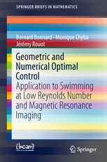

Address
e-mail: jeremy.rouot@grenoble-inp.org
EPF CAMPUS DE TROYES
2, rue F. Sastre
10430 Rosières-près-Troyes
CV
[pdf]
Research Interests
Geometric control theory, Optimization and optimal control, Numerical methods, Fracture mechanics.
Applications:
Swimming at low Reynolds number, Nuclear magnetic resonance,
Orbital transfer with low thrust, Inverse optimal control in Robotics.
Associate member of the following research team and projects
Publications
New book !

Miscellaneous
Education
PhD in Applied Mathematics (Univ. de Nice Sophia Antipolis, 2016)
Ingénieur in Applied Mathematics / Computer Science
(Grenoble INP - ENSIMAG, 2013)